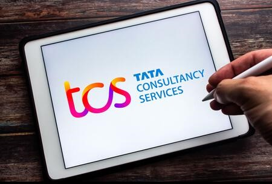

Tata Consultancy services

Tata Consultancy Services (TCS) is a software and services provider in India. It is part of the Tata Group, which oversees operations for over 100 companies in seven business sectors: communications and information technology, engineering, materials, services, energy, consumer products and chemicals.
- Type Public
- Industry: Information technology Consulting Outsourcing
- Founded 1968; 54 years ago
- Founder Tata Sons
- Headquarters: Mumbai, Maharashtra, India
- Area served: Worldwide
- Chairman: Natarajan Chandrasekaran
- MD & CEO: Rajesh Gopinathan
- Revenue Increase ₹195,772 crore (US$26 billion)[1] (2022)
- Operating income Increase ₹51,687 crore (US$6.8 billion)[1] (2022)
- Net income Increase ₹38,449 crore (US$5.0 billion)[1] (2022)
- Total assets Increase ₹141,514 crore (US$19 billion)[2] (2022)
- Total equity Increase ₹89,139 crore (US$12 billion)[2] (2022)
- Number of employees 528,748[3] (Dec 2021)
- Parent Tata Group
What TCS known for?
TCS is a top employer globally, and our 592,195 employees represent 153 nationalities across 46 countries. Our Tata Group heritage inspires our commitment to long-term partnerships, collaborative innovation, and corporate responsibility.
What is TCS employee?
Employees. TCS is one of the largest private-sector employers in India, and the fourth-largest employer among listed Indian companies (after Indian Railways, Indian Army, and India Post). TCS has crossed more than 500,000 employees as of 8 July 2021.
Tcs Services
- Banking & Financial Services
- Consumer Goods & Distribution
- Education
- HiTech
- Insurance
- Manufacturing
- Retail
- Capital Markets
- Communications, Media & Technology
- Energy, Resources & Utilities
- Information Services
- Life Sciences & Healthcare
- Public Services
- Travel, Transportation & Hospitality